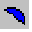
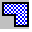
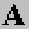

Native Drawing Objects (Draw Menu) |
  
|
Native Drawing Objects (Draw Menu) |
|
Selecting any of the items in the Draw menu puts the mousepointer in a state where it will draw a native object of the selected type. Native objects (listed below) are useful for creating borders and other annotations for your drawing. The mousepointer changes in appearance to indicate the type of native object that will be drawn when you next click the mouse. You can set the default appearance properties of native objects by right clicking on a clear space on the background of the drawing and select "Set Background Properties." Once you set the properties of the Background object, any new native object you create will have the same property settings.
Line: Draws a single line segment which can later be resized by dragging either endpoint. To draw a line only horizontally or vertically, hold down the Shift key while you draw the line. To turn off the snap-to-grid behavior, hold down the Ctrl key while you draw.
Rectangle: Draws a simple rectangle. To turn off the snap-to-grid behavior, hold down the Ctrl key while you draw.
Rounded Rectangle: Draws a rectangle with rounded corners which has extra yellow handles that can be dragged to adjust the radius of its curved edges. To turn off the snap-to-grid behavior, hold down the Ctrl key while you draw.
Ellipse: Draws an ellipse (or circle if height and width are equal). To turn off the snap-to-grid behavior, hold down the Ctrl key while you draw.
Arc: Draws a curved segment which can later be edited by dragging the yellow handles located at either endpoint. To turn off the snap-to-grid behavior, hold down the Ctrl key while you draw.
Pie: Draws a pie slice that can later be edited by dragging either of the two yellow handles at the endpoints. To turn off the snap-to-grid behavior, hold down the Ctrl key while you draw.

Chord: Draws a chord segment that can later be edited by dragging either of the two yellow handles at the endpoints. To turn off the snap-to-grid behavior, hold down the Ctrl key while you draw.Bezier Curve: Draws a Bezier curve, which can later be edited by right clicking the object and selecting "Edit Bezier Curve." To turn on snap-to-grid behavior, hold down the Ctrl key while you draw.
Polyline: Draws a multi-segmented polyline which can later be edited by right clicking the object and selecting "Edit Polyline Points." To draw the polyline, first click once, move the mouse and click again to make the first segment, move the mouse to make another segment, etc. Once you have drawn all the segments, press Esc to complete the polyline. To turn on snap-to-grid behavior, hold down the Ctrl key while you draw. To draw a segment only horizontally or vertically, hold down the Shift key while you draw. To edit an existing polyline, right click on it and click "Edit Polyline Points" from the popup menu. While in editing mode, each polyline point will have a yellow handle that you can drag to reposition that point. To delete an existing polyline point, click and hold the mouse button down on the point you want to delete and press the Backspace key. To draw a new point in between two existing points, click on a line segment of the polyline and drag the mousepointer to the place where you want the new point to be. When you are finished editing the polyline, right click away from it and click "Close Open Object" from the poup menu.

Polygon: Draws an enclosed polygon, which can later be edited by right clicking the object and selecting "Edit Polygon Points." To draw the polygon, first click once, move the mouse and click again to make the first side, move the mouse and click again to make another side, etc. Once you have drawn all the sides of the polygon, press Esc to complete the shape. Note that it is not necessary to close the polygon yourself, as the final side will be drawn for you from the last point to the first. To turn on snap-to-grid behavior, hold down the Ctrl key while you draw. To draw a segment only horizontally or vertically, hold down the Shift key while you draw. To edit an existing polygon, right click on it and click "Edit Polygon Points" from the popup menu. While in editing mode, each polygon point will have a yellow handle that you can drag to reposition that point. To delete an existing polygon point, click and hold the mouse button down on the point you want to delete and press the Backspace key. To draw a new point in between two existing points, click on a line segment of the polygon and drag the mousepointer to the place where you want the new point to be. When you are finished editing the polygon, right click away from it and click "Close Open Object" from the poup menu.
Text: Puts the drawing in Text creation mode. Simply begin typing to create the text object. When you have finished typing, press Enter or Esc to complete the object. To edit the text after creating the object, right click the object and select "Edit Text Object."Dimension Line: Draws a Dimline object with arrowheads at both ends and text in the center indicating the distance between the endpoints of the line. You can resize the Dimline object by dragging either of the two endpoints. To change the dimension text to a different unit type, select the menu "Format | Units" and enter a different value in the "Length and width units" input. To change the number of decimal places displayed, click the menu "View | Drawing Board Options" and enter the number of decimal places you want in the "Display precision" input. Note that you cannot move the Text object associated with a Dimline object, but it will be repositioned automatically to the center of the Dimline whenever you move the Dimline. To draw a Dimline only horizontally or vertically, hold down the Shift key while you draw the Dimline. To turn off the snap-to-grid behavior, hold down the Ctrl key while you draw.